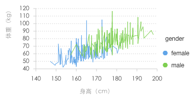
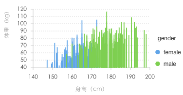

教程
简介
在 G2 图表构成章节中已经对 G2 的图表构成做了说明。本章主要以绘制散点图为例来引出并介绍组成 G2 图表的基本图形语法元素，每种语法元素都会有相应的章节进行详细的讲解。
场景
下表展示的是某一年不同性别群体的身高和体重数据，这组数据包含了很多有用的信息：（1）身高和体重的相关关系如何？（2）整体数据集的分布情况如何，身高和体重分别在哪一个数据段比较集中？（3）不同性别的身高、体重分布又如何？
| 性别 | 身高（cm） | 体重（kg） |
|---|---|---|
| 女 | 167.5 | 59 |
| 女 | 161.2 | 51.6 |
| 男 | 176 | 86.4 |
| ... | ... | ... |
| 男 | 180.3 | 82.8 |
绘制散点图
数据源
图形语法最基础的部分就是数据源，通过 chart.source(data[, colDefs]) 方法为 G2 图表载入数据源。
图形语法
chart.point().position('height*weight').color('gender');Geom 选择
散点图也叫 X-Y 图，它将所有的数据以点的形式展现在笛卡尔坐标系上，以显示变量之间的相互影响程度，所以绘制时我们需要选择 chart.point() 来创建一个图层。如前面所述，Geom 决定了图表中图形的形状，包括点、线、面、多边形等。如柱状图的几何对象为 interval，散点图对应 point，折线图对应 line。下表展示了常见的图表对应的 geom，另外通过设置数据的 Adjust 调整方式，还可以绘制出更多的图表。
| 图表 | geom |
|---|---|
| 点图（散点图、气泡图） | point |
| 折线图 | line |
| 柱状图、饼图、玫瑰图 | interval |
目前 G2 提供的 geom 支持的类型如下：
chart.<geom>()
- point: 将数据展示成一个个的点；
- path: 将数据连接成一条线，不保证数据的顺序；
- line: 一种特殊的path(路径)，x轴上的数据进行排序；
- area: 将线图进行闭合，中间区域填充，构成区域图；
- interval: 使用矩形、弧形表示数据的上下区间，可以用来生成柱状图、直方图、饼图等图表；
- polygon: 用于绘制地图、treemap 等多边形的图表；
- schema: 自定义图，用于自定义各种图表，可以用于展示箱型图、蜡烛图等图表；
- heatmap: 用于绘制热力图；
- contour: 用于绘制等高线。
Attr 图形属性映射
散点图中，点（Point）的位置由变量的数值决定。每个点不仅有横坐标、纵坐标，还有大小、颜色和形状这些图形属性（Attr，每个图形属性都可以映射为一个变量或者为一个常数）。上图中我们使用数据中的 height（高度）属性控制点的横轴位置，weight(体重)属性控制点的纵轴位置，gender(性别)来决定点的颜色，而点的大小和形状没有指定，所以直接使用 G2 提供的默认设置。下表展示的数据或许更有利于大家对图形属性映射的理解：
| color --> gender | x --> height | y --> weight |
|---|---|---|
| 女 | 167.5 | 59 |
| 女 | 161.2 | 51.6 |
| 男 | 176 | 86.4 |
| ... | ... | ... |
| 男 | 180.3 | 82.8 |
G2 中支持的图形属性映射如下；
chart.<geom>().<attr>(dims[, cfg]):
- position(dim)：将对应字段的值映射到图形的位置；
- color(dim[, colors])：用对应字段的值或者常量来表示图形的颜色，如果传入 colors 会根据传入的颜色分配颜色；
- shape(dim[, shapes])：用对应字段的值或者常量来表示图形的形状，如果传入 shapes 会根据传入的图形集合分配图形类型；
- size(dim[, max[, min]])：用对应字段的值或者常量来表示图形的大小，如果同时传入max、min，则根据最大值、最小值的区间进行大小的自动计算；
- opacity(dim)：用对应字段的值或者常量来表示图形的透明度。
另外还提供了以下三种方法，虽然使用的方式同以上方法一致，但是需要注意的是它们并不是一种图形映射属性，可以将其理解为图表的配置方法：
- label(dim[, cfg])：显示对应字段的数据文本；
- tooltip(dims)：指定 tooltip 中显示的数据字段；
- style(cfg)： 配置 geom 几何对象的图形样式。
具体的使用方式请参见 API 文档： 图形属性。
如果我们改变使用的 Geom 几何图形对象，还可以绘制出折线图 line、柱状图 interval等等。
 
Coord 坐标系
坐标系用于将数据对象的位置映射到图形平面上，位置通常由两个坐标 (x, y) 来决定，但是 G2 也支持一维坐标系。目前 G2 支持多种坐标系，其中笛卡尔坐标系是最常用的，当你传入图形属性 position 中的参数包含两个维度时，默认使用的就是笛卡尔坐标系。另外 G2 提供的坐标系中还包含坐标轴和网格线。以下是 G2 所支持的坐标系种类，另外用户还可以对坐标系进行各种变换操作，具体的方法请参见 API 坐标系配置:
chart.coord(type[, cfg])[.action()]， 通过 type 来指定坐标系类型
- rect: 直角坐标系，常见的 x,y 轴垂直的直角坐标系（笛卡尔）坐标系；
- polar: 极坐标系，由半径和角度构成；
- theta: 半径固定的极坐标系，常用于生成饼图、环图；
- plus: 特殊的极坐标系，0点不在圆心的极坐标系；
- map: 地理坐标系，用于绘制不同投影下的地图。
Facet 分面
分面在绘图时非常有用，通过设置分面，可以方便地展示数据的不同子集，如下图所示，我们通过设定以 'gender' 字段来分割数据，就可以很快得绘制出不同性别对应的身高和体重关系的散点图。
关于分面的详细介绍请见 Facet。
图表辅助元素
以下图形元素：坐标轴（Axis）、提示信息（Tooltip）、图例（Legend）、自定义辅助（Guide）作为图表的辅助元素，在图表信息阅读以及挖掘方面提供了非常重要的功能，所以 G2 也为这些图形元素提供了丰富的语法支持，这里我们统称他们为图表辅助元素。
- chart.axis(dim, cfg): 用于配置数据字段对应的坐标轴的配置项；
- chart.tooltip([enable], cfg): 用于配置鼠标 hover 到图表图形显示提示信息；
- chart.legend(dim, cfg): 用于配置图表图例的展示样式；
- chart.guide(): 添加辅助元素，详细信息参考辅助元素。
更多
通过本章节你已经熟悉了 G2 的主要语法，在接下来的章节中，你可以通过更加详细的讲解，了解 G2 方方面面的知识。下一章： 创建 Chart 图表